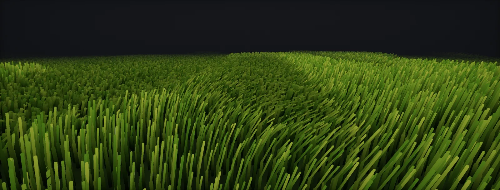

Foliage Wind
Layered procedural wind for foliage: a wind field with travelling gusts, trunk bending with length preservation, branch rotation around stored pivots, leaf flutter, wave functions, normals and motion vectors, interaction, and what wind costs per pass, built in Unity HDRP and Unreal.

The wind field
Foliage wind is almost always procedural: a vertex shader offsets each vertex from a few global parameters and the data stored in the mesh. It splits into three layers that each answer to a different part of the wind:
| Layer | What moves | Driven by | Frequency |
|---|---|---|---|
| Main bend | The whole plant leans away from the wind | Wind strength, height above the base | Slow: follows gusts (seconds) |
| Branch sway | Each branch rotates around its pivot | Pivot and phase per branch, stiffness | Medium: about 0.3–1 Hz |
| Leaf flutter | Leaf edges and card corners shiver | Edge mask and phase in vertex colour | Fast: several Hz, small amplitude |
The input is a : a global direction and base strength (from a Wind Zone in Unity, a Wind Directional Source or a material parameter collection in Unreal, or gameplay code), plus gusts. Gusts come from a tiling noise texture sampled at the plant's world position and scrolled along the wind direction, so a gust visibly travels across a field instead of every plant pulsing at once:
Read the gust once per instance (at the object's origin) for the main bend, so a tree does not bend differently at its top and bottom, and add a per-instance phase from a hash of the position for the faster layers.
Trunk bend with length preservation
The main bend pushes every vertex along the wind, more the higher it is. Crysis (Sousa, GPU Gems 3, 2007) uses a curve that stays flat near the ground and rises steeply at the top. An offset alone stretches the trunk, so the bent position is rescaled to its original distance from the base. The tip then moves on a circle and sinks as the plant leans, which is what makes the bend read as bending and not as shearing:
The bend is the same for the whole plant, so it needs no per-vertex data beyond the position: height above the base and distance from it. Keep it small for trees (a few degrees in a storm) and larger for grass and bushes; too much bend is what makes wind look fake.
Branch sway around pivots
Branches rotate around the point where they leave the trunk, each with its own phase, by an angle scaled by the wind and by its stiffness. This is where the stored pivots are used. Rotating keeps branches rigid; adding an offset instead (still common in simple shaders) stretches them:
The rotation axis is built in the shader: perpendicular to the wind and to up, cross(up, windDir), with a second smaller rotation around the branch's own direction for a twist. Rotating around an axis through a pivot is the Rodrigues formula, or a rotation matrix built once per vertex. Twigs repeat the same step with their own pivot first, then the branch's (hierarchy).
Stiffness comes from vertex colour or from the hierarchy level: trunks barely move, thin branches move most. The phase per branch, from the layout or a hash of the pivot position, keeps neighbouring branches out of sync.
Leaf flutter
The fastest layer moves only the leaves: a small offset along the normal at several hertz, masked so the stem stays still and the leaf edge moves most. The mask and a per-leaf phase sit in the vertex colour (Crysis: R edge stiffness, G phase, B branch stiffness, A ambient occlusion):
Flutter is cheap and contributes much of the impression of life up close, and almost nothing at a distance. It is the first layer to switch off in lower LODs.
Wave functions
Every layer needs a periodic signal. A single sine repeats visibly: every plant pumps in the same rhythm. Crysis sums smoothed triangle waves at frequencies with no simple ratio between them, so the sum never visibly repeats, and triangle waves avoid the sine instruction:
Drive the time input with the gust strength (faster in strong wind), and add each part's phase. A scrolling noise texture is the alternative when the motion should look turbulent rather than periodic; it costs a texture read per vertex.
Normals and motion vectors
Two things go wrong when vertices move in the vertex shader.
Normals. A rotated branch should rotate its normals by the same rotation, which costs one extra matrix multiply. Flutter offsets are too small to matter; skip their normals. Grass and canopies whose normals were replaced (foliage normals) keep the replaced normals.
Motion vectors. Temporal anti-aliasing, motion blur and upscalers need to know where each pixel was last frame. The engine knows how objects moved, not how the vertex shader moved their vertices. Without motion vectors for the vertex animation, swaying leaves smear and ghost under TAA:
The fix is to evaluate the wind twice, with this frame's and last frame's time and wind parameters, and output the difference. Unity 6 does it for you when the motion depends only on time (HDRP: Motion Vector For Vertex Animation on the material; URP Shader Graph: Additional Motion Vectors = Time-Based). Unreal writes velocity for World Position Offset when Output velocities due to vertex deformation is enabled in the project settings. Wind parameters that change from gameplay need their previous values passed in as well.
Interaction: bending away from characters
Grass that parts around a character is a push away from a sphere, scaled by how close the blade is and masked by height so the root stays planted:
One or two interactors fit in shader parameters. For many (every character, projectiles, vehicles), write their positions into a small buffer (structured buffer) or render them into a top-down interaction texture around the camera, which the grass reads by world position. Let that texture fade back over a few seconds and trampled grass recovers slowly instead of snapping back.
What wind costs
Wind is vertex shader work, and the vertex shader runs in every pass that draws the plant: depth prepass, each shadow cascade, the motion vector pass, the main pass. Shadows must move with the plant, so they cannot skip the wind:
- Fade wind out with distance and switch it off beyond (Unreal: World Position Offset Disable Distance on instances; Unity: a distance fade in the shader, or LODs with a simpler material).
- Drop layers per LOD: flutter only on LOD0, branch sway on LOD0–1, the main bend on all.
- Enlarge culling bounds by the sway, or plants pop out at the screen edge.
- On Nanite, World Position Offset makes clusters' bounds conservative and costs culling efficiency; Unreal's newer Nanite Foliage moves wind to bones for that reason (skinned foliage).
Build it in Unity HDRP
The route builds the three wind layers as one Custom Function in the vertex stage of a foliage graph, fed by the pivots from Foliage Vertex Data and by a Wind Zone through a small driver script. Written for Unity 6 with HDRP 17; Unity 2022 LTS works the same apart from a few renamed menu entries.
- Put
FoliageWind.hlslnext toFoliagePivots.hlsl. Add a Wind Zone (Directional) to the scene and a GameObject withWindDriver.cs; assign the zone and a tiling noise texture (import it with sRGB off, wrap Repeat). - Create the graph: in the Project window, Create > Shader Graph > HDRP > Lit Shader Graph. Open it and check the Graph Inspector > Graph Settings: Material Type Translucent for leaves (see Foliage Shading), Alpha Clipping on, Double-Sided on.
- In the vertex stage, decode the pivots with the FoliagePivots Custom Function. Add a Transform node from Object to Absolute World, type Position, with input (0, 0, 0): the plant's origin. The wind direction is a global read inside the file and converted to object space there, so rotated instances bend downwind; do not add it as a graph property (the names would clash).
- Add Float properties
PlantHeight(the mesh height in metres),BendAmount(0.05 for trees, 0.3 for grass),BranchAngle(in radians, 0.15),FlutterAmplitude(0.01) andFlutterFrequency(4). In the vertex stage, add a Custom Function node. Set Type toFile, Source toFoliageWind.hlsland Name toFoliageWind(without the_floatsuffix). Add the inputs PositionOS (Vector 3), NormalOS (Vector 3), BranchPivot (Vector 3), BranchPhase (Float), TwigPivot (Vector 3), Level (Float), VertexColor (Vector 4), PlantOriginWS (Vector 3), Time (Float), PlantHeight (Float), BendAmount (Float), BranchAngle (Float), FlutterAmplitude (Float), FlutterFrequency (Float) and the outputs OutPositionOS (Vector 3), OutNormalOS (Vector 3), in that order and with those types: they must match the function's parameters. - Connect OutPositionOS to the master stack's Vertex Position and OutNormalOS to Vertex Normal. Feed Time from the Time node.
- On the material, enable Motion Vector For Vertex Animation (Surface Options). HDRP then evaluates the vertex stage again with the previous frame's time, so TAA does not smear leaves. Changes of the global wind from script are not part of that history; the driver eases them to keep the error small.
- Enlarge the renderer's bounds by the maximum sway (Renderer > Bounds override or a slightly larger LOD Group size) and fade the wind out with distance: multiply BendAmount and BranchAngle by a distance fade from the camera, or give far LODs a material without the Custom Function.
#ifndef ATLAS_FOLIAGE_WIND_INCLUDED
#define ATLAS_FOLIAGE_WIND_INCLUDED
// Layered foliage wind in object space: leaf flutter, twig and branch rotation around stored pivots,
// and a Crysis-style main bend with length preservation.
// Globals, set by WindDriver.cs:
float4 _AtlasWind; // xyz: wind direction (world, normalised), w: base strength
float4 _AtlasGust; // x: gust strength, y: gust speed (m/s), z: gust size (m)
TEXTURE2D(_AtlasGustTex); // tiling greyscale noise, linear, wrap
SAMPLER(sampler_AtlasGustTex);
float Atlas_SmoothTri(float x) // smoothed triangle wave, -1..1 (GPU Gems 3, ch. 16)
{
float t = abs(frac(x + 0.5) * 2.0 - 1.0);
return t * t * (3.0 - 2.0 * t) * 2.0 - 1.0;
}
float3 Atlas_RotateAround(float3 p, float3 pivot, float3 axis, float angle) // Rodrigues, axis normalised
{
float3 v = p - pivot; float s, c; sincos(angle, s, c);
return pivot + v * c + cross(axis, v) * s + axis * dot(axis, v) * (1.0 - c);
}
// PositionOS, NormalOS: Position and Normal nodes (Object). Pivots, phase, level: from FoliagePivots.
// VertexColor: R flutter mask, G leaf phase, B stiffness (1 = stiff), A AO.
// PlantOriginWS: Transform node, (0,0,0) from Object to Absolute World (Position).
// The wind direction is converted to object space in here, so rotated instances bend the right way.
void FoliageWind_float(float3 PositionOS, float3 NormalOS, float3 BranchPivot, float BranchPhase, float3 TwigPivot, float Level,
float4 VertexColor, float3 PlantOriginWS, float Time,
float PlantHeight, float BendAmount, float BranchAngle, float FlutterAmplitude, float FlutterFrequency,
out float3 OutPositionOS, out float3 OutNormalOS)
{
// wind strength at this plant: base plus a gust that travels along the wind direction
float2 gustUV = (PlantOriginWS.xz - _AtlasWind.xz * _AtlasGust.y * Time) / max(_AtlasGust.z, 0.01);
float gust = SAMPLE_TEXTURE2D_LOD(_AtlasGustTex, sampler_AtlasGustTex, gustUV, 0).r;
float w = _AtlasWind.w + _AtlasGust.x * gust;
float3 WindDirOS = normalize(TransformWorldToObjectDir(_AtlasWind.xyz) + float3(1e-5, 0.0, 0.0));
float plantPhase = frac(dot(PlantOriginWS, float3(0.137, 0.0, 0.271))); // different per instance
float3 axis = normalize(cross(float3(0.0, 1.0, 0.0), WindDirOS) + float3(1e-5, 0.0, 0.0)); // positive angle leans downwind
float stiff = VertexColor.b;
float3 p = PositionOS, n = NormalOS;
// 1. leaf flutter: small offset along the normal, masked to the leaf edges
float leafPhase = VertexColor.g + BranchPhase + plantPhase;
p += NormalOS * (FlutterAmplitude * VertexColor.r * w * Atlas_SmoothTri(Time * FlutterFrequency + leafPhase * 7.0));
// 2. twig or card around its own pivot (children first)
if (Level > 1.5)
{
float a = 0.6 * BranchAngle * w * (1.0 - stiff) * (0.5 + 0.5 * Atlas_SmoothTri(Time * 0.793 + leafPhase * 3.1));
p = Atlas_RotateAround(p, TwigPivot, axis, a); n = Atlas_RotateAround(n, 0, axis, a);
}
// 3. branch around its pivot: carries its twigs along
if (Level > 0.5)
{
float wave = Atlas_SmoothTri(Time * 0.375 + BranchPhase * 5.3 + plantPhase) * 0.6 + Atlas_SmoothTri(Time * 0.193 + BranchPhase * 2.1) * 0.4;
float a = BranchAngle * w * (1.0 - stiff) * (0.55 + 0.45 * wave);
p = Atlas_RotateAround(p, BranchPivot, axis, a); n = Atlas_RotateAround(n, 0, axis, a);
}
// 4. main bend, then back to the original distance from the base
float h = saturate(p.y / max(PlantHeight, 0.01));
float bend = (pow(1.0 + h, 4.0) - pow(1.0 + h, 2.0)) / 12.0 * BendAmount * w * PlantHeight;
float len = length(p);
float3 bent = p + WindDirOS * bend;
p = len > 1e-4 ? normalize(bent) * len : bent;
OutPositionOS = p;
OutNormalOS = normalize(n);
}
#endif// Assets/Scripts/WindDriver.cs: feeds a Wind Zone into the globals the foliage shaders read.
using UnityEngine;
[ExecuteAlways]
public class WindDriver : MonoBehaviour
{
public WindZone zone; // a Directional Wind Zone; its forward axis is the wind direction
public Texture2D gustNoise; // tiling greyscale noise, imported as linear (sRGB off), wrap mode Repeat
[Range(0, 2)] public float gustStrength = 0.6f;
public float gustSpeed = 6f; // m/s across the field
public float gustSize = 12f; // m per noise tile
[Range(0.1f, 10f)] public float response = 2f; // how fast the base strength follows the zone (per second)
float strength;
static readonly int WindId = Shader.PropertyToID("_AtlasWind"), GustId = Shader.PropertyToID("_AtlasGust"), TexId = Shader.PropertyToID("_AtlasGustTex");
void Update()
{
if (zone == null) return;
float target = zone.windMain + zone.windTurbulence * 0.5f;
strength = Mathf.Lerp(strength, target, 1f - Mathf.Exp(-response * Time.deltaTime)); // smooth, no jumps
Vector3 d = zone.transform.forward; d.y = 0f; d = d.sqrMagnitude > 1e-6f ? d.normalized : Vector3.forward;
Shader.SetGlobalVector(WindId, new Vector4(d.x, d.y, d.z, strength));
Shader.SetGlobalVector(GustId, new Vector4(gustStrength * zone.windPulseMagnitude, gustSpeed, gustSize, 0f));
if (gustNoise != null) Shader.SetGlobalTexture(TexId, gustNoise);
}
}Grass needs only the bend and the flutter: set Level to 0 (or skip the pivot decode) and use a higher BendAmount. The interaction push from the interaction chapter is one more line before the bend: p += normalize(p − c) * max(0, r − distance) * k * h, with the character position in object space.
Build it in Unreal Engine
Unreal moves vertices through World Position Offset. The same layers go into a Custom node, the global wind lives in a Material Parameter Collection, and the instances switch wind off at a distance. Engine alternatives: SimpleGrassWind for grass and PivotPainter2FoliageShader for Pivot Painter trees. Written for Unreal Engine 5.6 and later. Substrate is production-ready from 5.7; check Project Settings > Rendering > Substrate to see which material model a project uses.
- Create a Material Parameter Collection
MPC_Windwith a vectorWindDirection(xyz, w = base strength) and scalarsGustStrength,GustSpeed,GustSize. Set them from a Blueprint (Set Vector Parameter Value on the collection), for example from a Wind Directional Source's direction and strength, easing changes over a second. - In the material: sample a tiling gust noise texture at
(ObjectPosition.xy − WindDirection.xy · GustSpeed · Time) / GustSize(Object Position is in cm, so scale GustSize accordingly) and buildW = WindDirection.w + GustStrength · noise. A PerInstanceRandom node givesPlantPhase. - Transform the wind direction with TransformVector World to Local and normalise. Decode the pivots with
FoliagePivots.ush. - Add a Custom node with
FoliageWind.ushand the inputs listed in its header; feed P from Pre-Skinned Local Position and N from Pre-Skinned Local Normal. Transform the result with TransformVector Local to World and connect it to World Position Offset. - In Project Settings > Rendering, set Output velocities due to vertex deformation so TAA and TSR receive motion vectors for the wind.
- On the foliage type or HISM component set World Position Offset Disable Distance (for example 5000 cm for grass, 15000 for trees). Instances beyond it skip the vertex animation entirely, including in shadow passes.
// Custom node "FoliageWind" (World Position Offset). All positions in local space, centimetres.
// Inputs: P (float3, Pre-Skinned Local Position), N (float3, Pre-Skinned Local Normal),
// BranchPivot, TwigPivot (float3), BranchPhase, Level (float) -- from FoliagePivots.ush
// VC (float4, Vertex Color), WindLocal (float3, wind direction transformed World->Local, normalised),
// W (float, wind strength incl. gust, from the MPC and a gust texture), Time (float), PlantPhase (float),
// PlantHeight (float, cm), BendAmount, BranchAngle (rad), FlutterAmp (cm), FlutterFreq (Hz)
// Output: CMOT Float 3 = local offset. Transform it Local->World (TransformVector) and plug into World Position Offset.
// Z is up in Unreal.
struct WindFns
{
float SmoothTri(float x) { float t = abs(frac(x + 0.5) * 2.0 - 1.0); return t * t * (3.0 - 2.0 * t) * 2.0 - 1.0; }
float3 Rot(float3 p, float3 piv, float3 ax, float a) { float3 v = p - piv; float s, c; sincos(a, s, c); return piv + v * c + cross(ax, v) * s + ax * dot(ax, v) * (1.0 - c); }
};
WindFns f;
float3 axis = normalize(cross(float3(0, 0, 1), WindLocal) + float3(1e-5, 0, 0));
float3 p = P;
float leafPhase = VC.g + BranchPhase + PlantPhase;
p += N * (FlutterAmp * VC.r * W * f.SmoothTri(Time * FlutterFreq + leafPhase * 7.0));
if (Level > 1.5) p = f.Rot(p, TwigPivot, axis, 0.6 * BranchAngle * W * (1.0 - VC.b) * (0.5 + 0.5 * f.SmoothTri(Time * 0.793 + leafPhase * 3.1)));
if (Level > 0.5)
{
float wave = f.SmoothTri(Time * 0.375 + BranchPhase * 5.3 + PlantPhase) * 0.6 + f.SmoothTri(Time * 0.193 + BranchPhase * 2.1) * 0.4;
p = f.Rot(p, BranchPivot, axis, BranchAngle * W * (1.0 - VC.b) * (0.55 + 0.45 * wave));
}
float h = saturate(p.z / max(PlantHeight, 1.0));
float bend = (pow(1.0 + h, 4.0) - pow(1.0 + h, 2.0)) / 12.0 * BendAmount * W * PlantHeight;
float len = length(p);
float3 bent = p + WindLocal * bend;
p = len > 0.01 ? normalize(bent) * len : bent;
return p - P;For Nanite meshes, World Position Offset needs Evaluate World Position Offset and makes cluster culling conservative; keep the offsets small or use the experimental Nanite Foliage skinning path described in Skinned and Baked Foliage Animation.
Sources and further reading
The formulas and engine details in this unit come from these references. Engine documentation changes between versions.
- BookGPU Gems 3, chapter 16: Vegetation procedural animation and shading in CrysisTiago Sousa · NVIDIAMain bending with length preservation, detail bending, vertex colour masks and the smoothed triangle waves.
- BookGPU Gems 3, chapter 6: GPU-generated procedural wind animations for treesRenaldas Zioma · NVIDIAHierarchical branch simulation on the GPU.
- DocsMotion vectors in Shader Graph (Additional Motion Vectors)UnityTime-Based and Custom motion vectors for vertex animation.
- DocsSpeedTree Importer: Wind tabUnityStrength and direction response, randomness.
- DocsPivot Painter Tool 2.0: foliage shader and wind settingsEpic GamesWind setting groups per hierarchy level, turbulence and gust textures.
- TalkBetween Tech and Art: The Vegetation of Horizon Zero DawnGilbert Sanders · GDC 2018Production foliage: wind, shading and performance at scale.